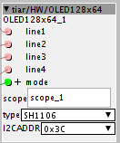
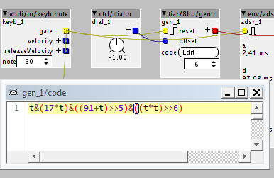

Just synced libraries again.
Definitely not there, while the other new ones are.

Hi @blaerg,
They are in the patches, not in the objects.
They are, with many other patches in File (from the editor menu bar) -> Library -> community -> tiar -> ...
Problem on my end, then! A problem in awareness - I didn't even know this patches menu was there...
Another 'hidden' one is:
menu bar -> Help -> Library ->...it directly accesses the "help patches" associated to objects
try the help patch to get an idea: menu: Help -> Library -> Community -> tiar ->HW -> OLED128x64
This object allows to use a 128x64 OLED I2C display (using PB8 and PB9 in I2C mode).

if mode == 0 the OLED will display line1, line2, line3 and line4 strings (up to 11 characters) :
if mode == 1 the OLED will display line1 and a graph corresponding to the scope object linked in the "scope" parameter:

type can be set to SH1106 or SSD1306. 0"96 displays are usually SSD1306 while 1"3 displays are SH1106.
I2CADDR is the I2C address of the display, it can be 0x3C or 0x3D.
Notes:
These I2C OLED displays are easy to connect to the Axoloti, you just have to add two pull up resistors.
If you use the object I made, it is quite easy to use (see the help patch Help -> Library -> Community -> tiar ->HW -> OLED128x64).
If you want to draw fancy stuff it will be much harder, you will have to code very low level graphic algorithms and mess with some sort of double buffering.
Cool sounds great. I am not that much of a hardware fiddler, so this sounds great.
I just want some kind of parameter feedback. Maybe two of these OLED's would be great.
On Organelle they just updated the code for the display, so now you can actually draw stuff on the display, not only letters. Its pretty cool. Haven't dug into it yet, though, but as far as I know it is mostly for showing simplestuff like an adsr envelope.
I avoided double buffering to save precious RAM for audio purposes, thus some limitations in my object.
As my object allows to draw the content of an oscillo scope object, it may be easy to make an object compatible with a scope object to draw other curves, such as envelopes.
If you want to use two displays, verify that you can change their I2C address (generaly with some strap or soldering desoldering a 0 Ohm resistor).
On Axoloti I dont really need the graphics so I can do with the simple version and save ram for other puposes.
Thanks for the tip 
 Object tiar/8bit/gen t
Object tiar/8bit/gen t
help/test patch available in
Help -> Library -> Community -> tiar -> 8bit -> gen t
(triggered by C4 and D4 keys)
This object is directly inspired by this video and page:
Now, you can experiment and use in the Axoloti this kind of 8bit sound with the tiar/8bit/gen t:

Now, let's experiment and share some 8bit formulas !
I begin:
accelerating engine:
t*t>>15^0x55555555" t*t>>15 " generates a pitch increasing sawtooth
" ^0x55555555 " inverts one in two bits, it transforms the sawtooth into a more complicated waveform (sort of fractal)
(this trick is the base for the dist/fractalI distortion)
ahem, this has been done before
see here: http://community.axoloti.com/t/hellcore-contributions/1745
Thanks @lokki, I missed this one ! it really looks great and includes some presets !
see the help patch to get an idea: menu: Help -> Library -> Community -> tiar -> dist -> fractalI and fractalI_multisin
This is a very special kind of distortion that generate lots of harmonics.
It is roughly x8 oversampled to limit aliasing.
The help patch uses a simple sine wave as an input.. but the output is somewhat more "powerful".

Just want to give a huge thumbs up from here @SmashedTransistors. Your objects are really cool and for a beginner coder like me, I learned a lot from looking at some of your objects.
hey @SmashedTransistors any chance the iteration speed of these fractal distortions could be modulated? that would add the possibility to have slower evolving distortion sounds...
Thanks @jaffasplaffa,
I plan to take a "break" to add some comments in the patches and in the objects code.
Hi @lokki,
The distortions themselves are static functions (for a given input value, they will always give you the same output value).
The fractal distortions in the examples seem to be modulated because their inputs are modulated.
The inputs can be modulated in many interesting ways. I have experimented with some and
I have added a few help patches in Menu: Help -> community -> tiar -> dist
Notes:
Sounds great and would be appreciated. Some of your code... Just seems like voodoo to me, haha Mostly because its a lot more advanced than what I understand atm...... 


But its getting better. I actually got a simple VST written the other day, using Juce. Just one of the simple tutorials and it actually loads/works in Logic, which made me pretty excited. But so many things to learn in audio coding and i am really glad that we have these open source projects, where there is so many resources available. But going from Axoloti objects to Juce, where I have to worry about classes and all kind stuff which is not needed in Axoloti... Is another world. Should have started with coding 10 years ago